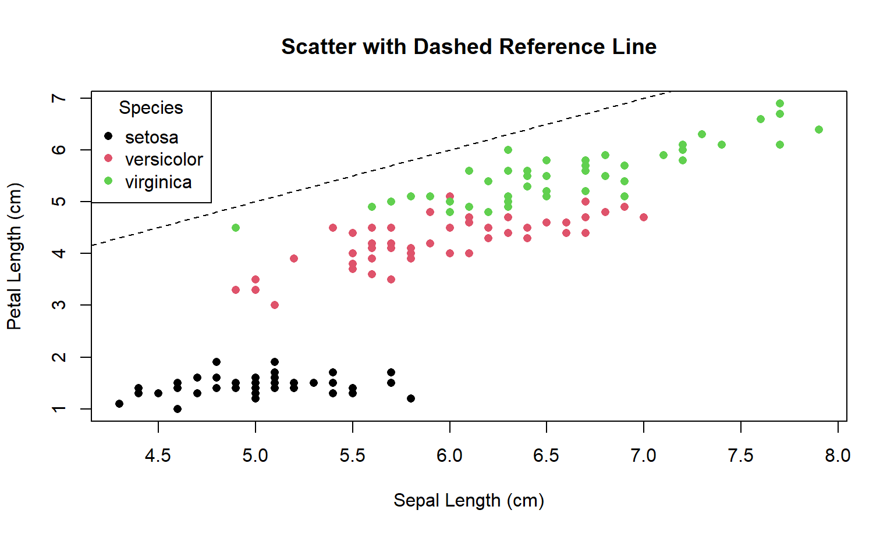
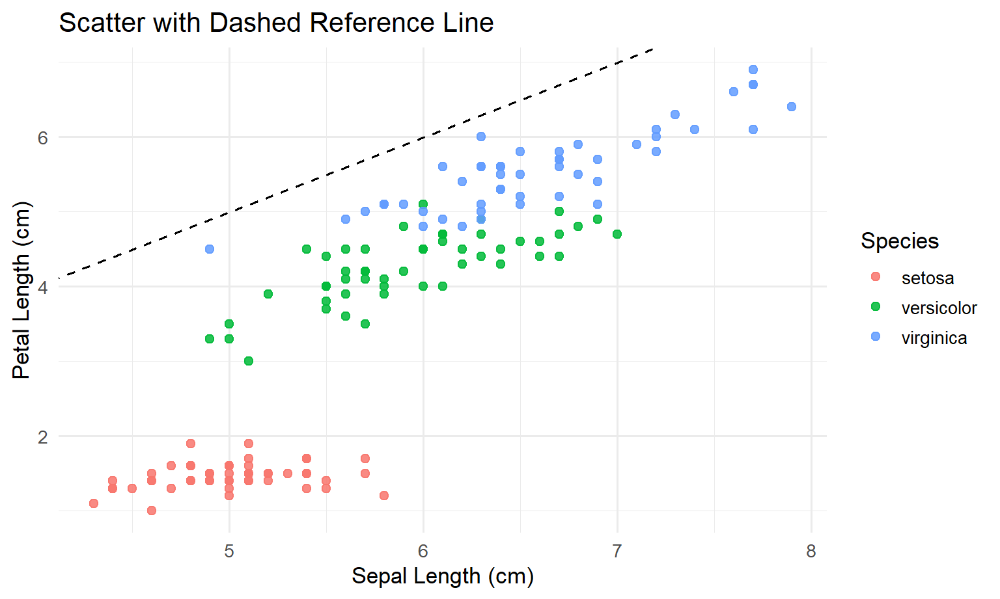
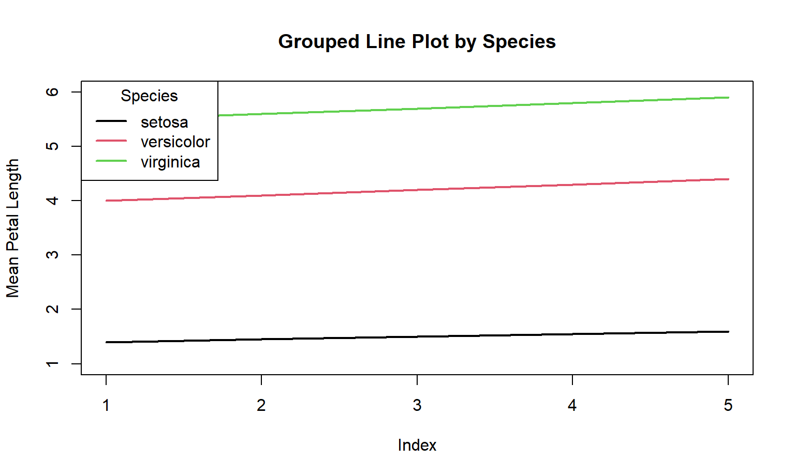
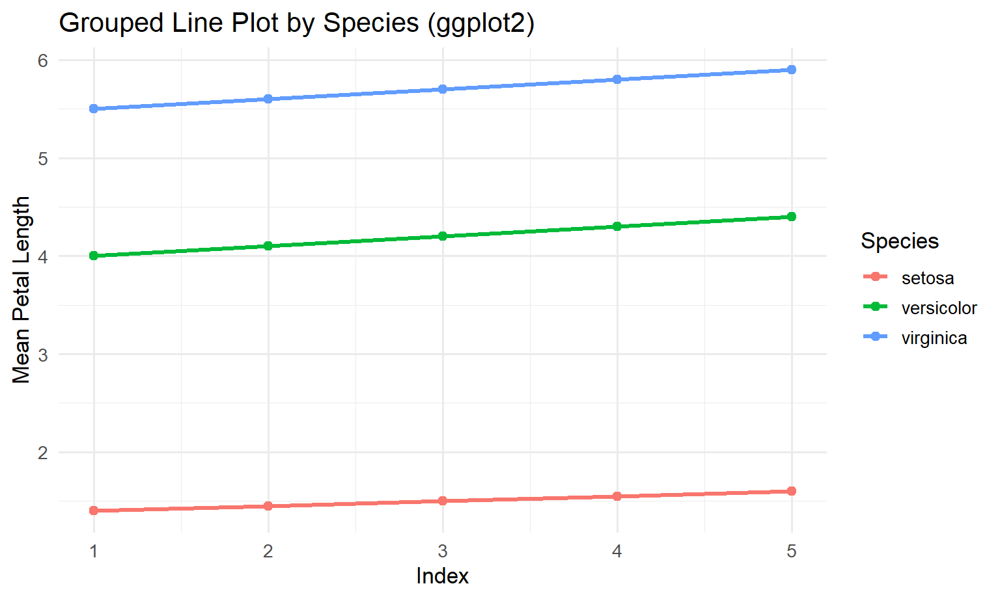
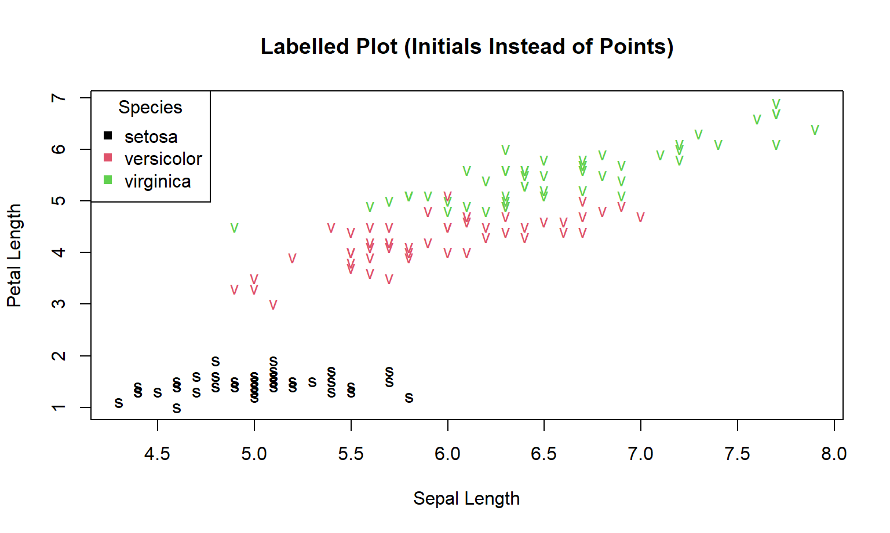
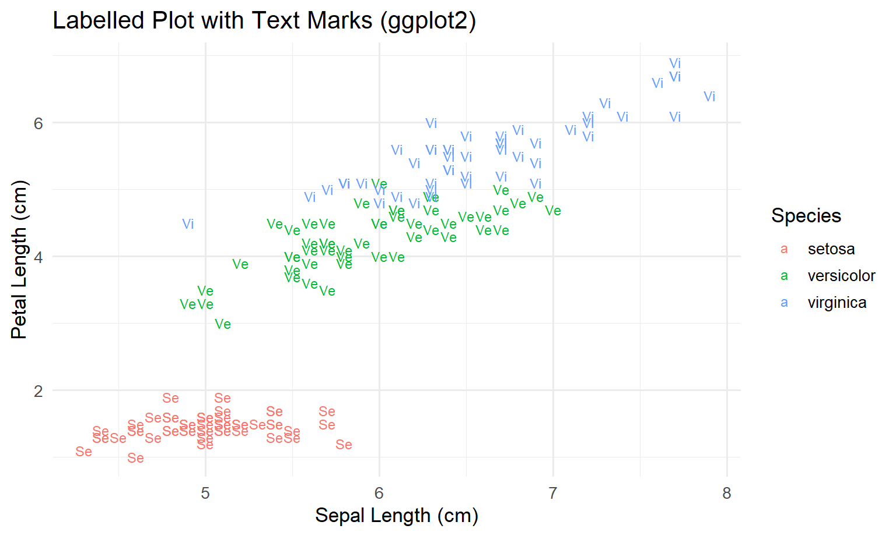
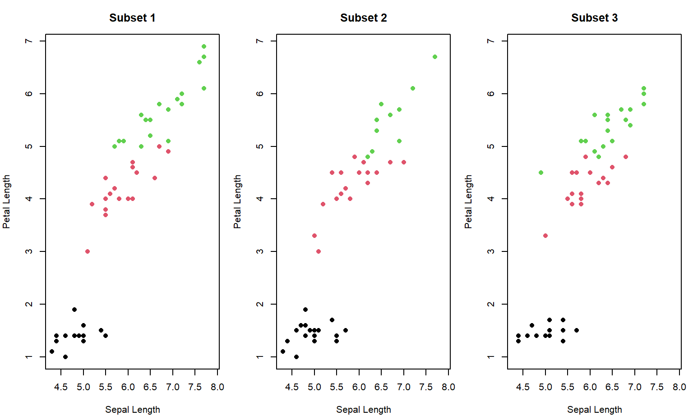
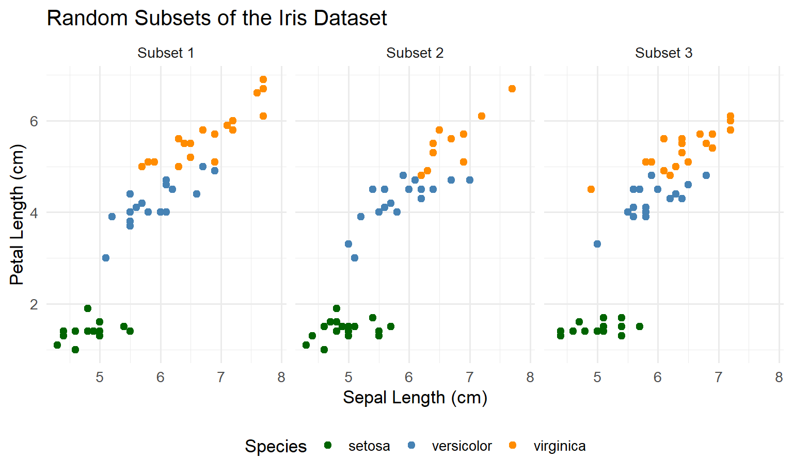
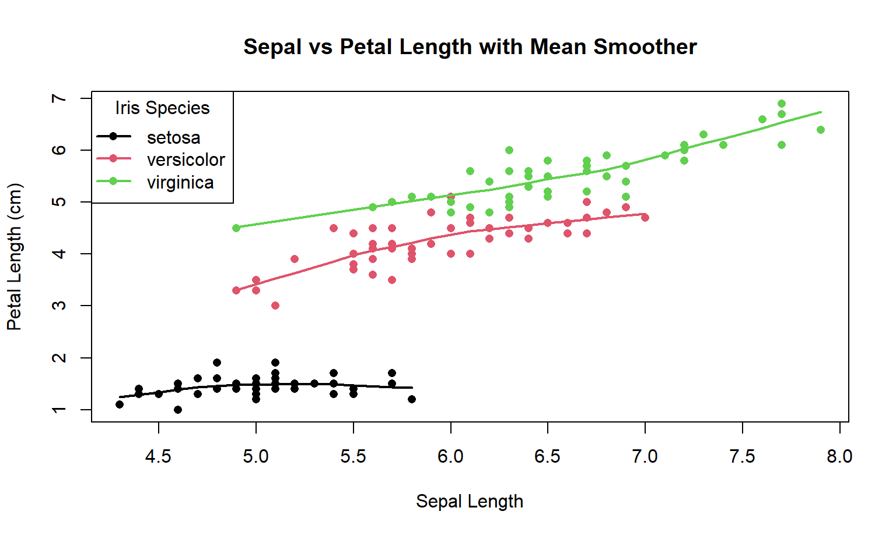
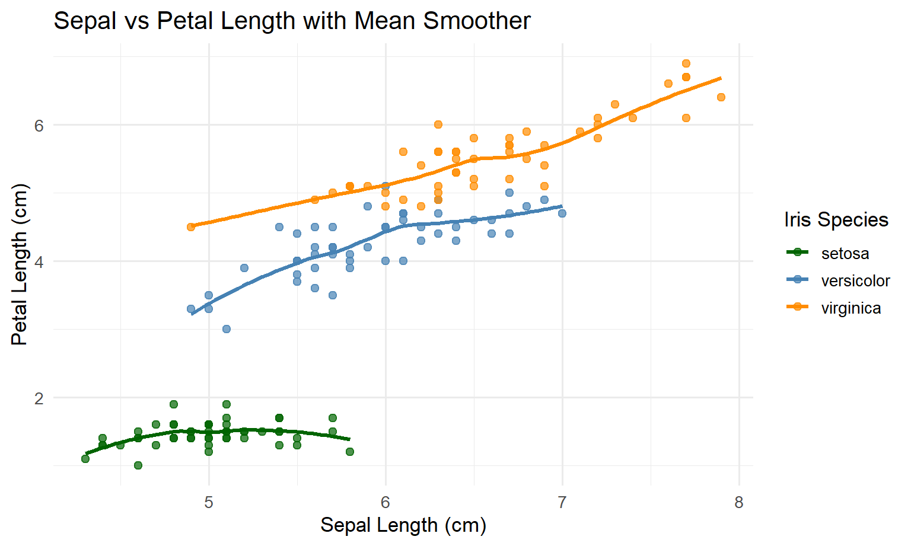

library(ggplot2)
set.seed(123)
# this below code is optional, it just makes plots consistent in this tutorial
knitr::opts_chunk$set(
fig.width = 8,
fig.height = 4.8,
fig.align = "center"
)Data Visualisation Tutorial
A self-guided Quarto tutorial
1 Welcome (read this first)
This tutorial assumes you are at the beginning of your journey with R and you are seeing ggplot2 for the first time. That is completely fine. We will be very slow, very explicit, and we will repeat the same ideas until they feel familiar.
1.1 What “Base R plotting” means (the default plotting engine)
R comes with a built-in plotting system. It is often called Base R graphics.
- It is the default because it is included with R.
- You do not need to install anything to use it.
- You usually build a plot by giving R step-by-step drawing instructions:
- “draw the points”
- “now draw a line”
- “now add a legend”
- “now change the axis labels”
This is called an imperative style: you tell the computer what to do next, like giving directions.
1.2 What ggplot2 is (and why people use it)
ggplot2 is a very popular R package for plots. It is based on an idea called the Grammar of Graphics.
The beginner-friendly meaning is:
- A plot is not just a picture.
- A plot is a structured description of how data becomes marks (points/lines/bars) on axes.
So instead of manually drawing each element, you describe the meaning:
- which dataset
- which variable goes on x and y
- which variable controls colour (or size, or shape)
- what mark to draw (points? lines? bars?)
- whether to split into panels (facets)
This is called a declarative style: you declare what the plot means, and ggplot draws it.
1.3 The big advantage of ggplot2 (consistency)
Base R can make good plots, but complex plots often require many manual steps.
ggplot2 is easier for many people because the code is consistent:
- the beginning is almost always
ggplot(data, aes(...)) - each new visual layer looks like
+ geom_*() - legends usually appear automatically from the mapping in
aes() - multi-panel plots are usually one line:
facet_*()
1.4 The anatomy of ggplot code (learn this pattern)
Most ggplot graphs follow this repeatable “sentence”:
ggplot(DATA, aes(MAPPINGS)) +
geom_SOMETHING(...) +
scale_SOMETHING(...) +
coord_SOMETHING(...) +
facet_SOMETHING(...) +
labs(...) +
theme_SOMETHING(...)Now in plain English:
ggplot(DATA, ...): “I am making a plot from this dataset.”aes(...): “Here is what variables mean visually (x, y, colour, etc.).”geom_*(): “Here is how to draw the data (points, lines, bars…).”scale_*(): “Here is how to translate values into colours/axes/labels.”coord_*(): “Here is the coordinate system / viewing window.”facet_*(): “Split into multiple panels (small multiples).”labs(...): “Titles and axis labels so humans can read it.”theme_*(): “Styling rules (font sizes, background, grid lines).”
1.5 How this tutorial works (Base R → think → ggplot → discuss)
Every module follows the same rhythm:
- We show the Base R version first (manual drawing, step by step).
- You pause and predict the ggplot version (you try to guess the pieces).
- We show the ggplot version (using the same grammar pattern).
- We discuss the differences in very simple language.
2 Setup
2.1 Load packages and set defaults
2.2 What we will use
- Dataset:
iris - Tools: Base R graphics and ggplot2
head(iris) Sepal.Length Sepal.Width Petal.Length Petal.Width Species
1 5.1 3.5 1.4 0.2 setosa
2 4.9 3.0 1.4 0.2 setosa
3 4.7 3.2 1.3 0.2 setosa
4 4.6 3.1 1.5 0.2 setosa
5 5.0 3.6 1.4 0.2 setosa
6 5.4 3.9 1.7 0.4 setosa
Note
A beginner-friendly way to think about good visualisation
Every plot should answer a question. In this tutorial, we repeatedly ask:
- What comparison or pattern should the reader see in one glance?
- What is the main visual signal (x position, y position, colour, panels, text)?
- What is the most likely misread (and how do we prevent it)?
3 1 — Scatter plot with legend + reference line
3.1 Goal
Create a scatter plot of:
- x =
Sepal.Length - y =
Petal.Length - colour by
Species
Add:
- a dashed 1:1 reference line
- a legend with clear labels
- axis labels with units
3.2 Step 1: Base R version (shown first)
In Base R, you build a plot by telling R what to draw one step at a time.
Read the next code like a recipe:
plot(...)draws the pointsabline(...)draws the dashed 1:1 linelegend(...)creates the legend
Here is the Base R code:
plot(
iris$Sepal.Length, iris$Petal.Length,
col = as.numeric(iris$Species),
pch = 16,
xlab = "Sepal Length (cm)",
ylab = "Petal Length (cm)",
main = "Scatter with Dashed Reference Line"
)
abline(a = 0, b = 1, lty = 2)
legend(
"topleft",
legend = levels(iris$Species),
col = 1:3,
pch = 16,
title = "Species"
)
Note
Principles used
- Reference lines are arguments: a 1:1 line creates an immediate benchmark for “above vs below”.
- Figure–ground: keep non-data ink light (dashed line) so points remain the focus.
- Legends must be decodable: if colour encodes groups, the legend must be present and readable.
3.3 Step 2: pause and predict the ggplot2 version
Now we do the same figure in ggplot2. Before looking at the solution, pause and ask:
- What is the dataset? (iris)
- What goes on x? (Sepal.Length)
- What goes on y? (Petal.Length)
- What does colour mean? (Species)
- What do we draw? (points)
- What extra guide line do we add? (a 1:1 line)
Try writing a ggplot “sentence” in your head first. If you want to sketch code, use this practice chunk (it will not run):
# ggplot(iris, aes(x = Sepal.Length, y = Petal.Length, colour = Species)) +
# geom_point(...) +
# geom_abline(...) +
# labs(...) +
# theme_...()3.4 Step 3: ggplot2 version (solution)
ggplot(iris, aes(Sepal.Length, Petal.Length, colour = Species)) +
geom_point(size = 2, alpha = 0.85) +
geom_abline(intercept = 0, slope = 1, linetype = 2) +
labs(
x = "Sepal Length (cm)",
y = "Petal Length (cm)",
colour = "Species",
title = "Scatter with Dashed Reference Line"
) +
theme_minimal(base_size = 13)
3.5 Step 4: discussion (what you should notice)
- In Base R, you built the plot by issuing separate commands.
- In ggplot2, you declared the meaning once (inside
aes(...)), and ggplot handled the legend automatically. - The ggplot version is easier to extend consistently: if you want another layer later, you add another line starting with
+.
4 2 — Grouped line plot
4.1 Goal
Plot three lines (one per species) over an index x = 1:5 using the provided means:
x <- 1:5
setosa_means <- c(1.4, 1.45, 1.5, 1.55, 1.6)
versicolor_means <- c(4.0, 4.1, 4.2, 4.3, 4.4)
virginica_means <- c(5.5, 5.6, 5.7, 5.8, 5.9)4.2 Step 1: Base R version (shown first)
In Base R, a “grouped line plot” often means:
- plot the first line with
plot(..., type = "l") - then manually add other lines with
lines(...) - then manually add a legend
Here is the Base R code:
plot(
x, setosa_means,
type = "l", lwd = 2, col = 1,
ylim = c(1, 6),
xlab = "Index", ylab = "Mean Petal Length",
main = "Grouped Line Plot by Species"
)
lines(x, versicolor_means, col = 2, lwd = 2)
lines(x, virginica_means, col = 3, lwd = 2)
legend(
"topleft",
legend = c("setosa", "versicolor", "virginica"),
col = 1:3, lwd = 2, title = "Species"
)
4.3 Step 2: pause and predict the ggplot2 version
Now think in ggplot terms.
In ggplot2, you strongly prefer your data to be in a simple table where:
- each row is one observation you want to draw
- each column is a variable (x, y, group, etc.)
So, to draw three lines, we should build a table with:
Index(x)MeanPetalLength(y)Species(which line / which colour)
4.4 Step 3: ggplot2 version (solution)
First we create a tidy dataframe:
means_df <- data.frame(
Index = rep(x, times = 3),
Species = rep(c("setosa", "versicolor", "virginica"), each = length(x)),
MeanPetalLength = c(setosa_means, versicolor_means, virginica_means)
)
head(means_df) Index Species MeanPetalLength
1 1 setosa 1.40
2 2 setosa 1.45
3 3 setosa 1.50
4 4 setosa 1.55
5 5 setosa 1.60
6 1 versicolor 4.00Now we plot it with the repeatable ggplot pattern:
ggplot(means_df, aes(x = Index, y = MeanPetalLength, colour = Species)) +
geom_line(linewidth = 1.2) +
geom_point(size = 2) +
labs(
x = "Index",
y = "Mean Petal Length",
colour = "Species",
title = "Grouped Line Plot by Species (ggplot2)"
) +
theme_minimal(base_size = 13)
4.5 Step 4: discussion (why ggplot feels easier here)
- In Base R, you wrote separate code for each group (
setosa,versicolor,virginica). - In ggplot2, groups are just values in a column (
Species), so adding a new group would just mean adding rows to the data. - The legend is automatic again because we mapped
colour = Species.
Note
Principles used
- Proximity + continuity: line plots are best when the story is “change across ordered x”.
- Common scales: fixed
ylim(Base R) prevents misleading comparisons caused by autoscaling.
5 3 — Labelled plot (text marks)
5.1 Goal
Replace points with initials:
- setosa → “s”
- versicolor → “v”
- virginica → “v” (problem!)
This exposes a design issue: labels can collide and symbols can be ambiguous.
5.2 Step 1: Base R version (shown first)
In Base R, a labelled plot usually works like this:
- first you create a blank plotting area (
type = "n") - then you place text labels using
text(...)
Here we label each point using the first letter of the species name.
Solution (Base R)
plot(
iris$Sepal.Length, iris$Petal.Length,
type = "n",
xlab = "Sepal Length",
ylab = "Petal Length",
main = "Labelled Plot (Initials Instead of Points)"
)
text(
iris$Sepal.Length, iris$Petal.Length,
labels = substr(iris$Species, 1, 1),
col = as.numeric(iris$Species)
)
legend(
"topleft",
legend = levels(iris$Species),
col = 1:3, pch = 15, title = "Species"
)
5.3 Step 2: pause and predict the ggplot2 version
In ggplot2, the Base R function text(...) is replaced by a layer called geom_text().
So the “translation” is:
- Base R: “draw blank plot, then write text at coordinates”
- ggplot2: “map x and y, map the label, then choose the text geometry”
Before looking at the solution, try to predict:
- What should go in
aes(...)if you want text labels? (hint:label = ...) - What geom draws text? (hint:
geom_text())
5.4 Step 3: ggplot2 version (solution)
First, we create labels that are not ambiguous. “s/v/v” is confusing, so we will use Se / Ve / Vi.
iris_lbl <- transform(
iris,
Abbr = c("Se", "Ve", "Vi")[as.numeric(Species)]
)
ggplot(iris_lbl, aes(x = Sepal.Length, y = Petal.Length, label = Abbr, colour = Species)) +
geom_text(size = 3.2) +
labs(
x = "Sepal Length (cm)",
y = "Petal Length (cm)",
colour = "Species",
title = "Labelled Plot with Text Marks (ggplot2)"
) +
theme_minimal(base_size = 13)
5.5 Step 4: discussion (what ggplot is doing for you)
- In Base R, you had to remember a special trick:
type = "n"to make a blank canvas, thentext(...)to place labels. - In ggplot2, you use the same pattern as always:
ggplot(data, aes(...))to declare meaning+ geom_text()to choose the mark+ labs()and+ theme_*()for readability
- This consistency is a big reason ggplot is easier for beginners.
Warning
Principle (avoid ambiguous encodings): two classes share the same initial (“v”). If you use text marks, choose labels that are unique and legible (e.g., “Se”, “Ve”, “Vi”), or use colour + shape, or facets.
6 4 — Small multiples: Base R vs ggplot2 facets
6.1 Goal
Create three random subsets of iris and show them side-by-side to compare patterns.
Key requirement:
- all panels must share the same axis limits so comparisons are valid.
6.2 Step 1: Base R version (shown first)
This is a classic situation where ggplot tends to feel easier: small multiples (many similar plots side-by-side).
In Base R you typically have to:
- set the layout manually (
par(mfrow = ...)) - use a loop to draw each panel
- fix axis limits yourself so the panels are comparable
Here is the Base R code:
set.seed(123)
n_subsets <- 3
subset_size <- 50
xlim <- range(iris$Sepal.Length)
ylim <- range(iris$Petal.Length)
par(mfrow = c(1, n_subsets), mar = c(4, 4, 3, 1))
for (i in 1:n_subsets) {
sub <- iris[sample(nrow(iris), subset_size), ]
plot(
sub$Sepal.Length, sub$Petal.Length,
col = as.numeric(sub$Species),
pch = 16,
xlim = xlim, ylim = ylim,
xlab = "Sepal Length", ylab = "Petal Length",
main = paste("Subset", i)
)
}
par(mfrow = c(1, 1))6.3 Step 2: pause and predict the ggplot2 version
Now think in ggplot terms:
- “If I had one table where every row is a point, and I add a column called
Subset, then I can facet by that column.”
So your prediction should be:
- create a column
Subset - draw one scatter plot
- ask ggplot to split into panels with
facet_wrap(~ Subset)
6.4 Step 3: ggplot2 version (solution)
set.seed(123)
n_subsets <- 3
subset_size <- 50
subset_list <- lapply(1:n_subsets, function(i) {
sub <- iris[sample(nrow(iris), subset_size), ]
sub$Subset <- paste("Subset", i)
sub
})
iris_subs <- do.call(rbind, subset_list)
ggplot(iris_subs, aes(Sepal.Length, Petal.Length, colour = Species)) +
geom_point(size = 2) +
scale_color_manual(values = c("darkgreen", "steelblue", "darkorange")) +
coord_cartesian(
xlim = range(iris$Sepal.Length),
ylim = range(iris$Petal.Length)
) +
facet_wrap(~ Subset) +
labs(
x = "Sepal Length (cm)",
y = "Petal Length (cm)",
colour = "Species",
title = "Random Subsets of the Iris Dataset"
) +
theme_minimal(base_size = 13) +
theme(legend.position = "bottom")
6.5 Step 4: discussion (why ggplot2 is “scalable” here)
- In Base R, making 10 panels means more layout thinking, more looping, and more manual control.
- In ggplot2, the plot code stays almost the same. You mostly change the data (more rows / more subsets), and ggplot keeps the layout consistent.
- This is one of the main advantages of the Grammar of Graphics approach: once the mapping is declared, “many panels” becomes a data problem, not a drawing problem.
Note
Principles used
- Small multiples: comparisons become easier when panels share scales and design.
- Consistency beats decoration: repeatable structure reduces cognitive load.
- Grammar of Graphics: once the mapping is declared, faceting is a data operation rather than a manual layout job.
7 5 — Scatter + smoother + scale thinking
7.1 Goal
Add a group-wise smoother to Sepal.Length vs Petal.Length:
- Base R:
lowess()per species - ggplot2:
geom_smooth(method = "loess")
Also practice scale discipline:
- choose breaks intentionally
- label them clearly
7.2 Step 1: Base R version (shown first)
In Base R, adding a “trend line” per group usually means:
- draw the scatter plot
- split the data by group (Species)
- for each group, compute a smoother (here we use
lowess(...)) - draw that smoother line with
lines(...)
Here is the Base R code:
plot(
iris$Sepal.Length, iris$Petal.Length,
col = as.numeric(iris$Species),
pch = 16,
xlab = "Sepal Length",
ylab = "Petal Length (cm)",
main = "Sepal vs Petal Length with Mean Smoother"
)
for (i in 1:3) {
sub <- iris[iris$Species == levels(iris$Species)[i], ]
lines(lowess(sub$Sepal.Length, sub$Petal.Length), col = i, lwd = 2)
}
legend(
"topleft",
legend = levels(iris$Species),
col = 1:3, pch = 16, lwd = 2,
title = "Iris Species"
)
7.3 Step 2: pause and predict the ggplot2 version
In ggplot2, the “translation” is usually:
- points →
geom_point() - smoother →
geom_smooth() - grouping by Species happens automatically because colour is mapped to Species
So before you look, predict what the ggplot sentence will look like:
- start:
ggplot(iris, aes(...)) - then:
+ geom_point(...) - then:
+ geom_smooth(...) - then: labels and theme
7.4 Step 3: ggplot2 version (solution)
ggplot(iris, aes(x = Sepal.Length, y = Petal.Length, colour = Species)) +
geom_point(size = 2, alpha = 0.7) +
geom_smooth(se = FALSE, method = "loess", linewidth = 1.2) +
scale_color_manual(
values = c("darkgreen", "steelblue", "darkorange"),
name = "Iris Species"
) +
labs(
x = "Sepal Length (cm)",
y = "Petal Length (cm)",
title = "Sepal vs Petal Length with Mean Smoother"
) +
theme_minimal(base_size = 13)
7.5 Step 4: discussion (what is simpler in ggplot2)
- In Base R, you manually looped over species and manually drew each smoother line.
- In ggplot2, you told ggplot “colour means Species”, and ggplot uses that grouping to draw separate smoothers automatically.
- This is the same “consistency advantage” again: you add layers, and ggplot handles grouping + legends in a predictable way.
Warning
Principle (don’t let smoothers over-claim): a smoother is not “truth”; it’s a modelling choice. Always ask:
- Is the smoother appropriate for the data density and noise?
- Would a linear model or summary by bins be clearer?
- Should you show uncertainty (SE/CI ribbon) or keep it simple?
8 Mini-section — Visualisation principles checklist
Before you submit a figure, check:
- Integrity: are scales honest? any distortion? any unnecessary ink?
- Perception:
- proximity: are related items grouped?
- similarity: are colours/shapes consistent?
- figure–ground: is the data visually dominant?
- Structure (Grammar of Graphics):
- are mappings (
aes) explicit and consistent across plots? - are scales and guides clearly labelled?
- are mappings (
- Accessibility:
- can it be read in grayscale?
- is colour the only encoding?
- is text large enough for projection/print?
9 Optional extensions
9.1 Extension 1 — Make labels unambiguous
Replace initials with unique labels: “Se”, “Ve”, “Vi”.
9.2 Extension 2 — Use facets to replace colour
Create a facet_wrap(~ Species) plot and move legend off (or drop colour entirely).
9.3 Extension 3 — Write a “caption that completes the figure”
Write 3–4 sentences:
- what is shown (variables + units)
- what colour encodes
- what the smoother means (if present)
- what the key takeaway is (one sentence)
10 Wrap-up
You now have a repeatable workflow:
- start with the question
- choose encodings that support perception (Gestalt)
- keep figures honest and minimal (Tufte)
- build plots as structured statements (Grammar of Graphics)